REGISTER OF STUDY
THE STUDENT SHOWN BELOW IS ENTERED
ON THE ROLL OF DISTINCTION
- SEP 2024 M.ARCH · NUST
- AUG 2021 B.ARCH · PU
- 2021 PCATP · REG.
Archive / Drawer 00 / Registry / Profile
This repository holds the working record of an architect who moved from designing shelter after floods to asking what our maps, datasets and models can — and cannot — say about the people who live with flood risk. Each item is catalogued by place, source and evidential status.
The artifacts below are fragments drawn from fieldwork, spatial analysis and experiments with human-centred AI. Drag them, shuffle them, or select any item to read its label. Where evidence runs out, the record says so: unobserved, unsupported, or unanswerable are kept as first-class entries.
REGISTER OF STUDY
THE STUDENT SHOWN BELOW IS ENTERED
ON THE ROLL OF DISTINCTION
RAJANPUR
PUNJAB, PK
Transitional
shelter after
rural flooding
HISTORICAL MEASUREMENT — BUILT FOOTPRINT, km²
DHAKA · GHS-BUILT-S · JRC GSW · SRTM
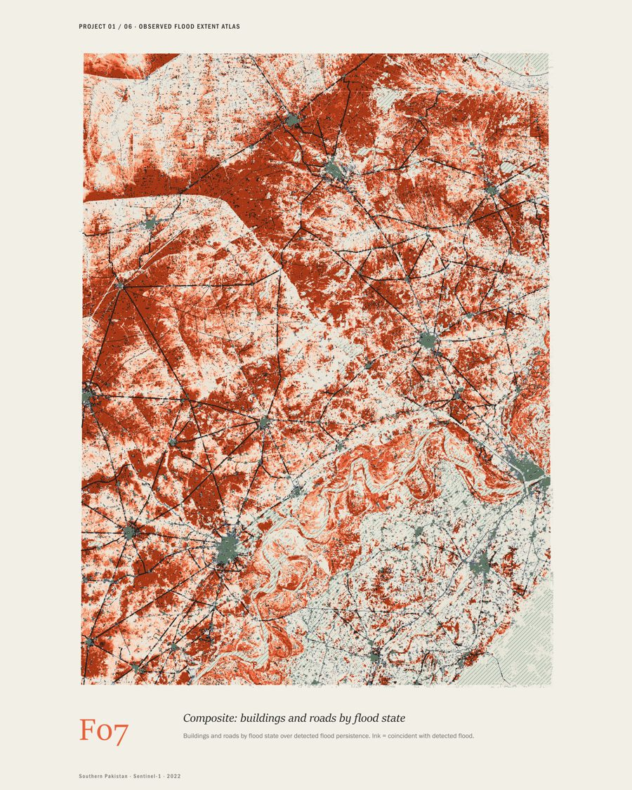
F07 — buildings & roads by flood state
NETWORKX · DIJKSTRA · 4.8 km/h
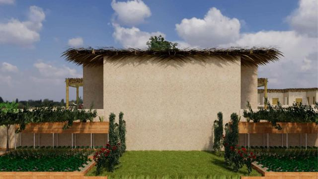
Shelter render · Rajanpur
READER’S CARD
Maria Jabeen
Architect · Researcher
Registered · PCATP 2021
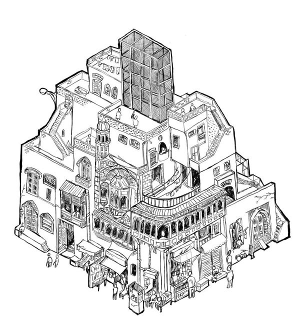
Pen & ink · isometric
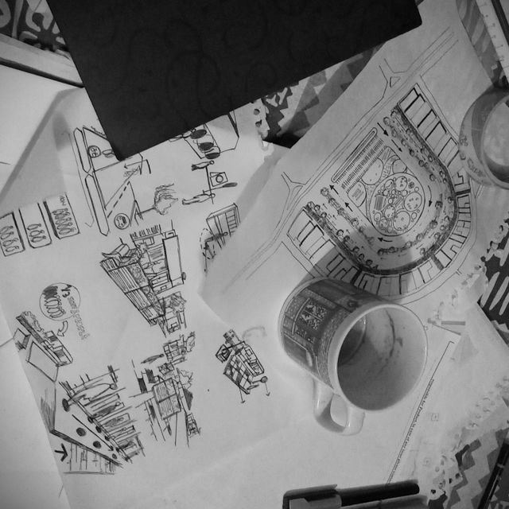
Process sketches
EVIDENCE STATUS SLIP
HHI · No. 0020 · VALIDATOR
Plan · graph paper
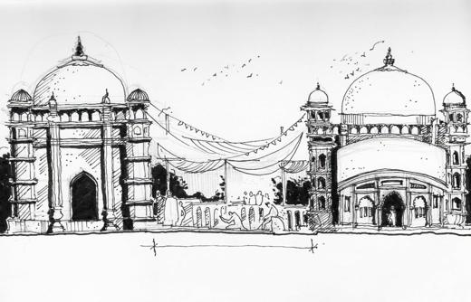
Elevation · ink
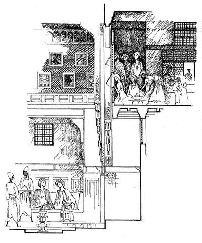
Section · cutaway
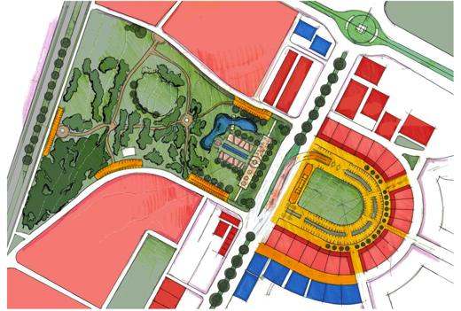
Masterplan · marker
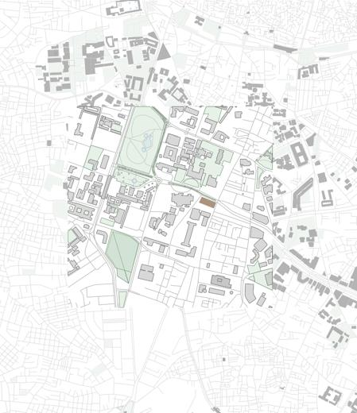
Figure-ground
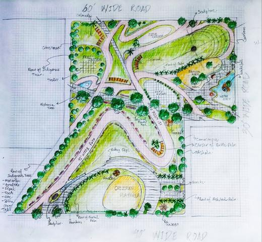
Zooscape · site plan
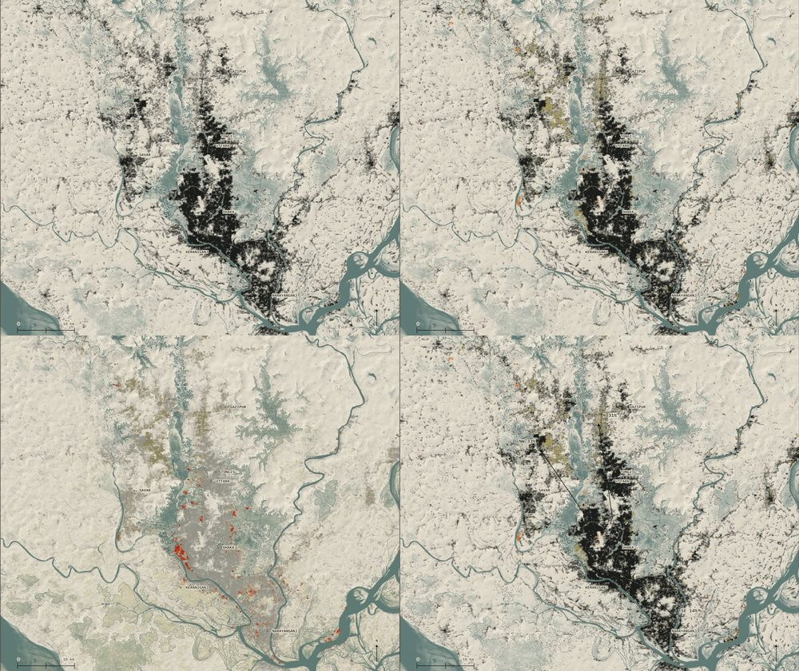
Dhaka · four states
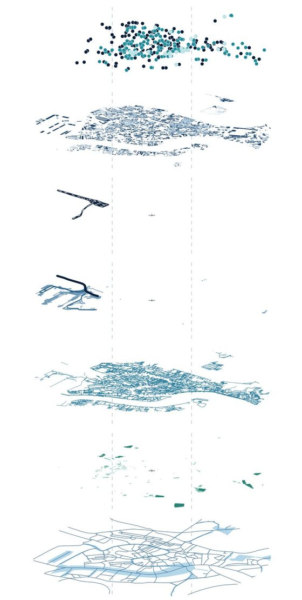
Venice · layers
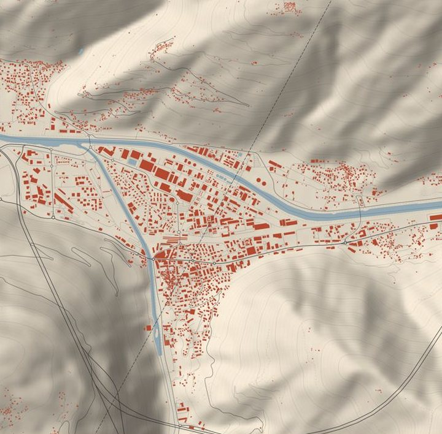
Terrain · valleys
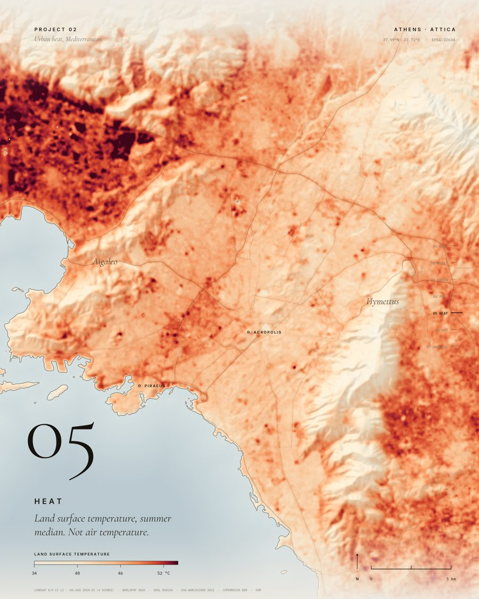
Heat · Athens
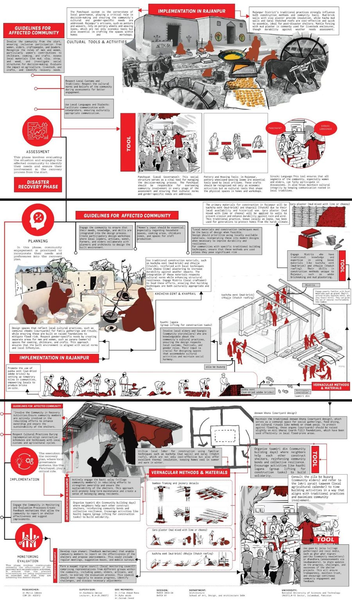
Thesis · one sheet
Archive / Drawer 01 / Architecture
Architecture projects from the M.Arch at NUST and the B.Arch at the University of the Punjab: flood shelter, housing, heritage and landscape. Every project can be explored: build it step by step, flip through the book, or zoom into the boards.
M.Arch thesis · NUST · 2024 · Rajanpur, Punjab
Portable shelter solutions and community needs in flood-prone regions
After the 2022 floods, many families left relief camps and returned to damaged villages. This thesis asks why, and designs a transitional shelter that households can build themselves with local skills and materials: brick, mud plaster, timber and thatch. It is planned to grow from an emergency unit into a permanent home, with space for a kitchen, veranda and cattle, and units that group into community clusters.
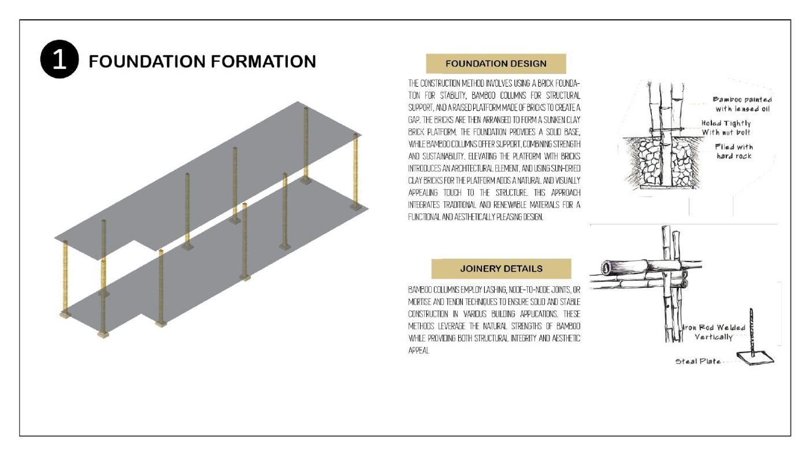
01 / 14Interactive · build the shelter
Foundation formation
Interactive · from emergency to community
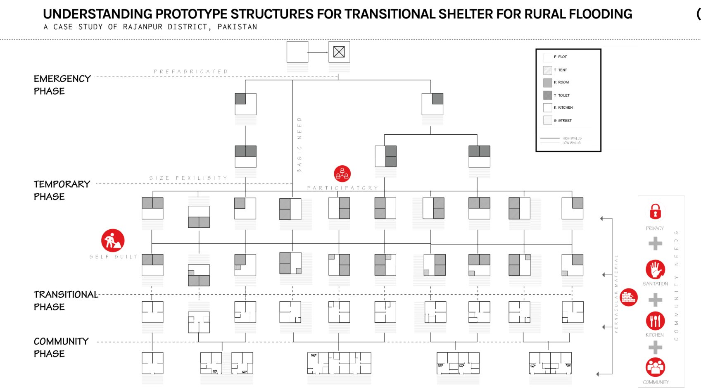
Interactive · cluster typologies
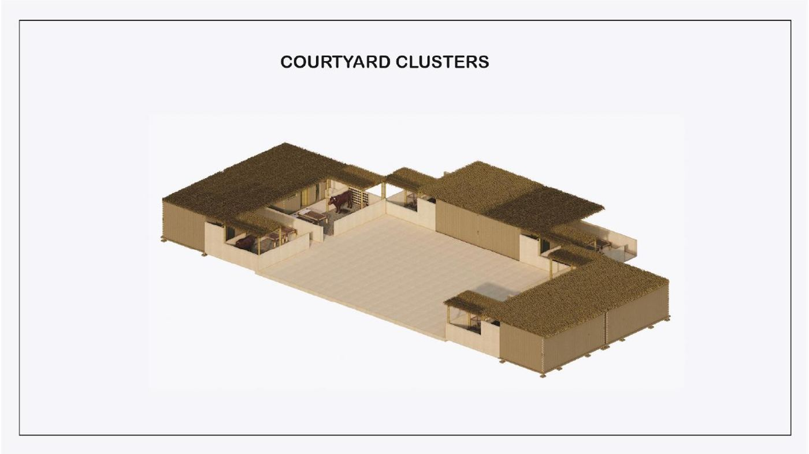
Interactive · presentations
From the thesis · select to enlarge
M.Arch studio · NUST · 2023 · I-10 Markaz, Islamabad
Mixed-use gentle-density housing for factory workers
Project titleExploring the Feasibility of Gentle Density Development: Factory Worker Housing in I-10 Markaz, Islamabad View post ↗
How can mixed-use gentle density address the housing and transport problems of factory workers in I-10 Markaz? The project starts from an analysis of how industry and housing meet in the Markaz: plot ratios, house density and street sections. It then proposes a low-rise, high-density block of four apartment modules (35 single, 35 shared, 20 couple, 10 family) around shared courts and terraces.
Urban heritage · 2020 · Chiniot, Punjab
A heritage corridor connecting Umar Hayat Mahal and the Shahi Mosque
Chiniot’s landmarks stand isolated in a dense, traffic-dominated core. The proposal turns the space between them into a walkable cultural spine. Streets are redesigned for pedestrians, and vacant buildings are reused as woodcraft workshops, galleries and community spaces, so that heritage works as a living system that supports local economies.
Adaptive reuse · 2019 · Mall Road, Lahore
Boutique restaurant and heritage hotel
Tollinton Market began as an exhibition hall and later became a market. The project reuses its large-span hall as human-scaled spaces for dining and staying. Verandahs and shaded thresholds come from Lahore’s colonial architecture, and contemporary insertions add new uses without disturbing the original form.
BIM · Autodesk Revit · M.Arch · 2024
Le Corbusier’s villa modelled as a full drawing set
A BIM exercise: the villa is rebuilt as an information model and documented in two A1 sheets. Drag the handle to move between the 2D drawing set and the 3D model views generated from the same model.
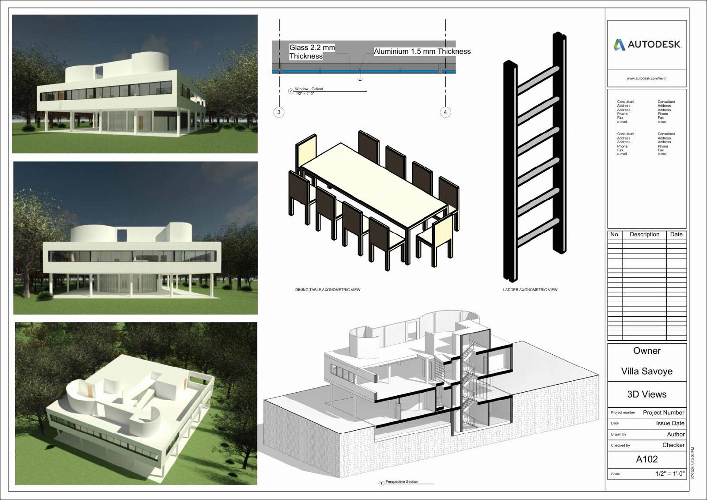
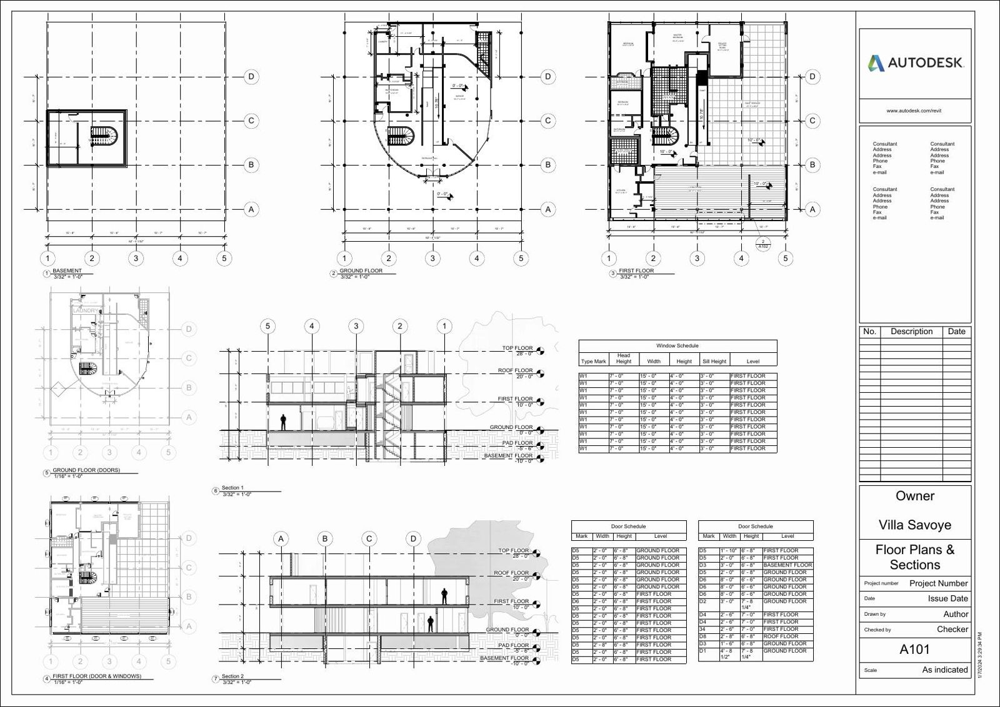
B.Arch thesis · University of the Punjab · 2021 · Lahore
Immersion in nature: transforming the zoological garden in suburban Lahore
The thesis reimagines the zoo as a landscape where visitors move through habitats rather than past cages. It combines environmental and ecological design, landscape architecture, site survey and mapping, from the first hand-drawn site plan to the final masterplan.
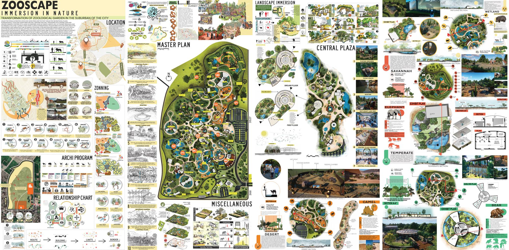
Hover to zoom · select to enlargeHand drawing · graphics · ongoing
Pen, paper and collage: where the projects begin
Drawing is how I think through a place before it becomes a model or a map. The isometric reads a walled-city block as one layered building of stairs, jharokas, terraces and shopfronts. The desk sketches test stalls, street sections and a circular market plan, and the collage gathers architectural plans into a single field.
Archive / Drawer 02 / Instruments
Two interactive research sites built on one verified data chain. Drop two circles on the map and compare how many people lived inside each observed flood extent.
Every number on these pages is read from a sourced facts file, and every limit of the data is stated beside the result.
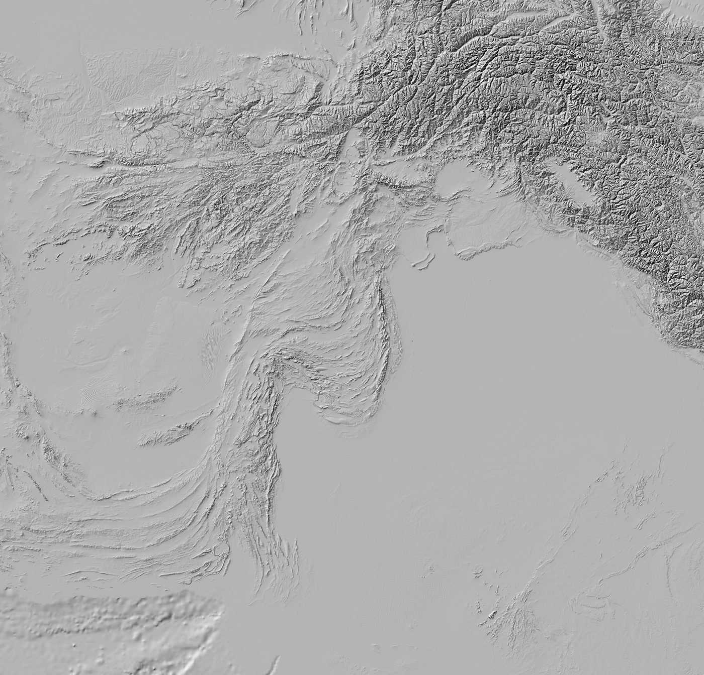
Pakistan · 2022 · UNOSAT / VIIRS · WorldPop · OSM
≈ 33.2 M modelled residents inside the observed 2022 flood extent (86,641 km²).
Limit — a first pass nobody has checked on the ground.
Open map ↗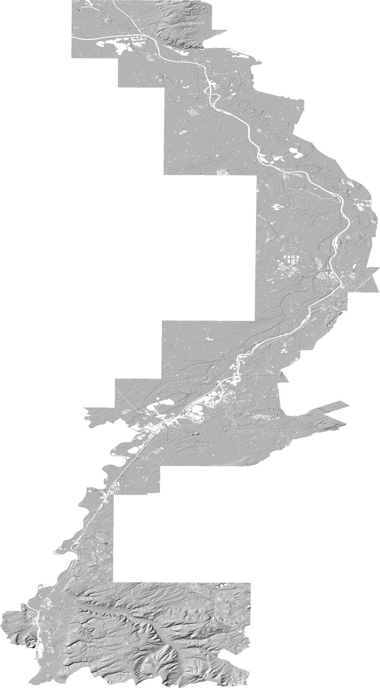
Netherlands · 2021 · CBS · BAG · 4TU · AHN4
6,535 residents in 100 m cells inside the observed extent, of 282,760 in the study area.
Limit — observed extent is preliminary and partly modelled.
Open map ↗Source code — indus-flood-2022 · limburg-flood-2021 · hhi-atlas
Archive / Drawer 03 / Collections
Eight spatial studies on open data, scripted in QGIS and Python. Each reports associations only, with provenance and limits documented. Select a plate to open its full board.
Archive / Drawer 04b / Teaching
I teach GIS, IT skills and architecture software: at university, through online courses, and on my own platform, Undercooked Architect.
Since 2022
Founder. Teaching IT skills, GIS and architecture software to students and young architects, through tutorials, workshops and learning resources.
@undercooked_architect ↗Jun 2022 – Aug 2023
Course instructor in SketchUp and Enscape: 10+ modules, 30+ tutorial videos and 20+ live sessions, with 50+ students trained and 100+ projects reviewed.
Nov 2024 – present
Lecturer, College of Art & Design, teaching architectural design and visual communication.
Oct 2023 – Mar 2024
Teaching assistant for thesis research and professional practice: 30+ fifth-year students.
Archive / Drawer 04 / Timeline
Architecture, teaching and education, filed as index cards. Drag sideways to move through the drawer.
NOV 2024 — NOW
University of the Punjab, Lahore
Design, theory, research methods and digital representation. Supervises undergraduate theses and brings climate-aware, evidence-based design into studio.
TEACHINGNOV 2022 — NOW
Aura Design Studio, Lahore
Workflows, documentation and quality control. As team lead (2022–25), led 15+ international interior-architecture projects and cut documentation errors by about 40%.
PRACTICEJAN 2023 — SEP 2024
NUST, Islamabad
Advanced Architectural Design. CGPA 3.69 / 4.00, distinction, Dean’s Honor List. Thesis on transitional shelter after rural flooding, Rajanpur.
EDUCATIONOCT 2023 — MAR 2024
NUST, Islamabad
Final-year studios in Professional Practice, Ethics and Thesis Research. Mentored 30+ students.
TEACHINGJUN 2022 — AUG 2023
Arch Conceito
Trained 50+ students in SketchUp and Enscape. 10+ modules, 30+ tutorial videos, 100+ guided projects.
TEACHINGDEC 2021 — DEC 2022
AXIS Communication, Lahore
Residential and commercial projects from concept to implementation: drawings, BIM, visualisation and site coordination.
PRACTICEAUG 2016 — AUG 2021
College of Art & Design, University of the Punjab
CGPA 3.55 / 4.00, distinction. Thesis: ZOOSCAPE — transforming the zoological garden in suburban Lahore.
EDUCATIONRECOGNITION
Archive / Drawer 05 / Credentials
Universities and institutions I have studied, taught or certified with. Hover over or tap a seal to turn it over.
Studied · taught · registered
Certified by
Archive / Drawer 04c / Publications
Two published outputs of the master’s thesis on transitional shelter after rural flooding in Rajanpur.
NUST Institutional Repository · 29 Oct 2024
School of Art, Design & Architecture, NUST · 14 Mar 2024
Featured in the M.Arch Program Catalog 2023–2024.
View catalogue ↗Archive / Drawer 05b / Conferences
Two international conferences on climate, water and planning, one built on a German–Pakistani academic exchange. Select a certificate to enlarge it.
Germany–Pakistan · 30 Nov – 1 Dec 2023
Responding to challenges of climate change through intercultural dialogue
International conference at the National University of Sciences & Technology, Islamabad, within the DAAD-funded programme “Higher Education Dialogue with the Muslim World”. Led by TU Dortmund University with the University of Engineering and Technology Lahore, Lahore College for Women University and NUST.
Islamabad · 25–27 September 2024
Water, Energy and Environment for Sustainability
The 4th NUST flagship international conference, “Shaping Tomorrow’s Spaces: Synergy of Design, Sustainability, and Nature”, held at the School of Art, Design and Architecture, NUST.
Archive / Drawer 06 / Methods
Research design
Mixed methods · surveys & interviews · household research · case studies · secondary-data analysis
Spatial analysis
GIS · network & accessibility · terrain · remote sensing · flood hazard & exposure mapping
People & planning
Participatory research · stakeholder engagement · vulnerability narratives · adaptation · recovery
AI & computation
Human-centred AI · evidence-constrained interpretation · epistemic restraint · bias identification
Archive / Drawer 07 / Correspondence
In climate-risk planning, spatial evidence and human-centred AI. References are available on request.